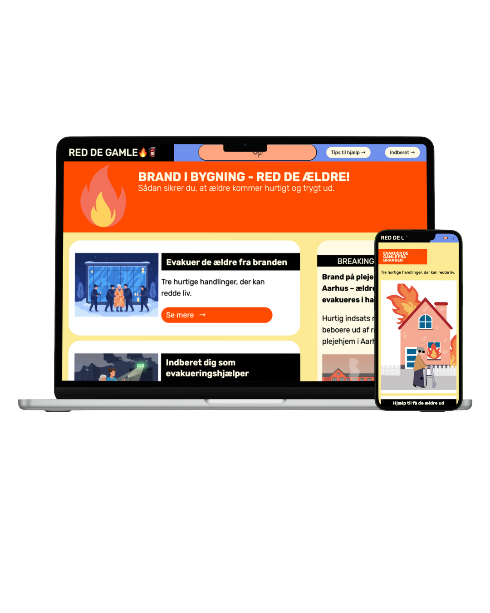

TEMA 4 - GRUNDLÆGGENDE BRUGERGRÆNSEFLADE
I tema 4 arbejdede vi med brugergrænseflader og blev introduceret til Adobe Illustrator. Her var der fokus på SVG, JavaScript, forms og dark mode.
EMERGENCYSITE
Opgaven tog udgangspunkt i en nødsituation, som vi selv skulle definere. Ud fra idéudvikling skulle vi inkorporere vores nødsituation i et website baseret på udleveret materiale.
Jeg startede med at finde min nødsituation via en idegeneringsværktøj og lavede derefter en brainstorm på hvad mit site skulle indeholde. Herefter ledte jeg efter inspiration til min stil, hvor jeg hurtigt gik med et flat design.
Se figma herJeg brugte Adobe Illustrator til at udvikle en SVG-infografik med klikbare hotspots i form af cirkler. Derudover skulle sitet indeholde en formular og en dark mode-funktion.
Projektet blev afleveret på Itslearning og efterfølgende gennemgået i en mindre gruppe medstuderende.
Se sitet her